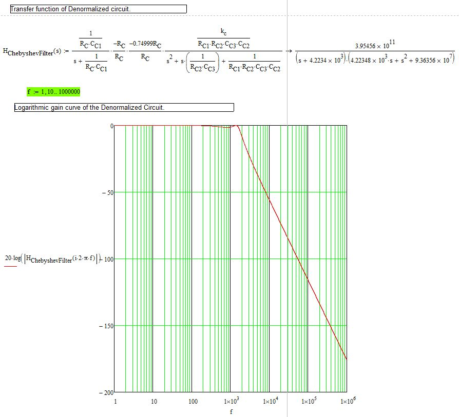
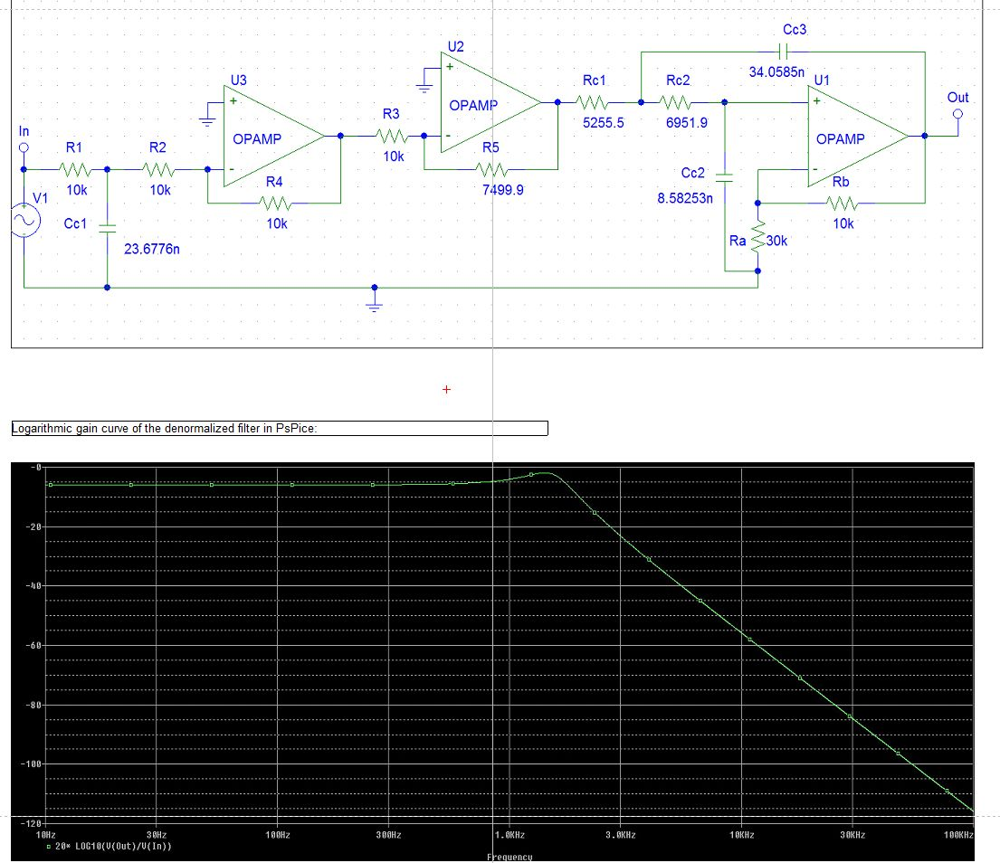

I separate the implementation in several parts as outlined below.
Part A. A1. Design a normalized low-pass filter with Butterworth response, cutoff rate equal to 18dB/octave and maximum allowed gain deviation in the pass region equal to amax = 1.5 dB. A2. Implement the normalized filter by connecting in cascade multiple sections. All capacitors must be identical. For the implementation of the second section, use a Sallen-Key filter with identical resistors and identical capacitors (Design II). A3. Depict the logarithmic gain curve as calculated from the transfer function of the design along with the transfer function of the circuit. A4. Denormalize the circuit such that the cutoff frequency become fc = 1.6 kHz and the resisters be at their normal values with dimensions. Sketch the logarithmic gain curve of the denormalized circuit given frequency f (logarithmic axis). Verify cutoff frequency and cutoff rate. A5. Simulate the PSPice denormalized circuit and verify it has the expected response curve.
Part B. B1. Convert the Butterworth filter to same-order Chebyshev filter, cutoff frequency fc and ripple amax = 1.5 dB, by changing the values of just 3 resistors. B2. Verify your calculations by sketching the response curve of the Chebyshev filter from the circuit. B3. Simulate the Chebyshev filter in PSPice and verify your design.
Clarifying some terminology I will be using:
We will be using passive electrical filters, i.e. no amplifiers, no Operational Amplifiers O.A..
The entire program is in “ButterworthSallenKeyChebyshev_Filters.xmcd”. You need MathCad 14 + to launch it. It is a paid program. Alternatively you may use SMath Studio which may (just maybe) open it (untested, theoretically it should be possible).
For reference, I cite below the Chebyshev transfer functions according to my analysis & synthesis (1st) as well as the simulation results in PsPice (2nd).


Platform used: Windows 8.1 x86_64 Mathcad 14.0.2.5 PSPice 9.0
Github repository link. There are PSPice files and the .xmcd file is the Mathcad document replete with the implementation and sufficient documentation.